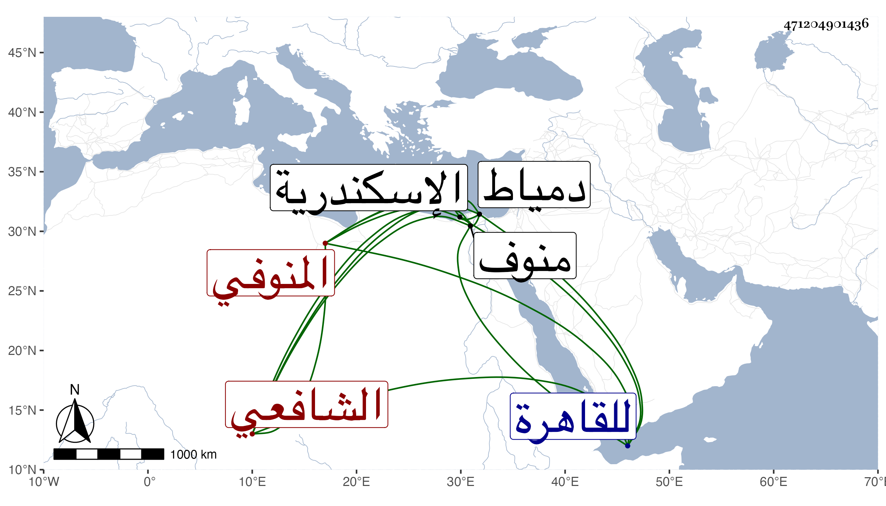

0902Sakhawi.DawLamic.ITO20230111-ara1.EIS1600.471204901436
Biography ID: 471204901436
576
أحمد بن محمد بن يوسف الشهاب المنوفي الشافعي ويعرف بابن فسية بالفاء المضمومة وفتح السين المهملة بعدها تحتانية مشددة وهو لقب أبيه وكانت أمه تلقب مثله لكن بنون بدل الفاء ولذا يعرف بها أيضا . ولد تقريبا سنة خمس وستين وسبعمائة في محلة منوف وقرأ بها القرآن وصلى به ونهاية الاختصار والرحبية والملحة وعرضها على القاضي عز الدين بن سليم وغيره وعلى العز المذكور بحث في النهاية وبحث على التاج عبد الله القروي في الملحة والجمل لابن فارس . وحج مرارا أولها في سنة ثلاثين وتكسب بالعطر وغيره وتردد للقاهرة والاسكندرية ودمياط مرارا وجمع في مدح النبي صلى الله عليه وسلم خمسة دواوين بيض أكثرها ويسمى أحدها لوحظ الأبكار وعرائس الأفكار وكتب عنه ابن فهد والبقاعي في نفيه من نظمه وقال ثانيهما مما تبعه فيه الأول إنه عريض الدعوى وشعره في الغالب غير متناسب الصدور والأعجاز قال وطعن بعضهم في صدقه كذا قال ومن أبياته في قصيدة :
| يا خير خلق الله يا شمس الهدى | يا من له عند الإله مكان |
| إني امرؤ يرعى الدياجي ناظري | في المدح وهو بها إذا سهران |
ومات قريبا في حدود الأربعين فما بعدها .
